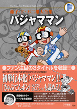

| |

＜テレビマガジン、てれびくん、
おともだち ほか掲載集＞
定価：本体1,600円＋税
A5判／328ページ
好評発売中！
★は初めて単行本に収録される
作品です。
※収録内容は変更になる
場合があります。

|
＜パジャママン＞
★パジャママンたんじょう（テレビマガジン1973年12月号）
★コアちゃんのかつやく（テレビマガジン1974年1月号）
★わすれ草（テレビマガジン1974年2月号）
★目ざましぐすり（テレビマガジン1974年3月号）
★切手とゆうかい（テレビマガジン1974年4月号）
★ピストル男を追え！（テレビマガジン1974年5月号）
★ニセ札がいっぱい！（テレビマガジン1974年6月号）
★大太郎とパジャママン（テレビマガジン1974年7月号）
★パパがピンチ!?（テレビマガジン1974年8月号）
★ユーレイが出た！（テレビマガジン1974年9月号）
★ロケットのなみだ（テレビマガジン1974年10月号）
★パジャマでぼうけん（たのしい幼稚園1973年12月号）
★たき火と火事（たのしい幼稚園1974年1月号）
★かたづけましょう（たのしい幼稚園1974年2月号）
★おねしょさわぎ（たのしい幼稚園1974年3月号）
★ネコかトラか（たのしい幼稚園1974年4月号）
★人さらいをやっつけろ！（たのしい幼稚園1974年5月号）
★ものおきなんてへっちゃらさ（たのしい幼稚園1974年6月号）
★大きなプール？（たのしい幼稚園1974年7月号）
★きれいな花火（たのしい幼稚園1974年8月号）
★台風で水びたし（たのしい幼稚園1974年9月号）
★遠足にいこう！（たのしい幼稚園1974年10月号）
★おちばの雨（たのしい幼稚園1974年11月号
★スーパーパジャマとはだしぐつ（おともだち1973年12月号）
★たこの人さらい（おともだち1974年1月号）
★パジャママンだるま（おともだち1974年2月号）
★でんしゃごっこ（おともだち1974年3月号）
★お花見にいこう！（おともだち1974年4月号）
★かしわもち大すき！（おともだち1974年5月号）
★せんめんきは？（おともだち1974年6月号）
★こおりのへや（おともだち1974年7月号）
★おばけこわいよ（おともだち1974年8月号）
★おとをたてないで（おともだち1974年9月号）
★おふろはきらい（おともだち1974年10月号）
★ハイキング（おともだち1974年11月号）
★おししどろぼう（デイズニーランド1974年1月号）
★ゆうびんです（ディズニーランド1974年2月号）
★ご本よんで!!（デイズニーランド1974年3月号）
★トイレについてきて（ディズニーランド1974年4月号）
★みんなみいつけたっ！（デイズニーランド1974年5月号）
★たからさがしごっこ（ディズニーランド1974年6月号）
★えきまでおむかえ（ディズニーランド1974年7月号）
★たくさんつれた!?（ディズニーランド1974年8月号）
★ねながらたおせ！（デイズニーランド1974年9月号）
★かげ絵あそび（ディズニーランド1974年10月号）
★おちばそうじ（デイズニーランド1974年11月号）
＜きゃぷてんボン＞
ボンと三びきの友だち（てれびくん1976年6月号）
パパ救出大作戦!!（てれびくん1976年7月号）
ゆうれい船のなぞをとけ!!（てれびくん1976年8月号）
千面相 VS きゃぷてんボン（てれびくん1976年9月号）
怪獣のすむ山（てれびくん 1976年10月号）
＜とんでこいようちえんバス＞
★とんでこいようちえんバス（おともだち1975年4月号）
|